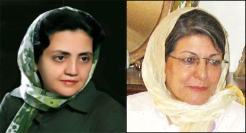

|
|

نظرات ستوده و پوربابایی وکلای خدیجه مقدم و محبوبه کرمی
دو شنبه10 فروردین 1388
تغییر برای برابری: در پی قبول کفالت ازبازداشت شدگان 6 فروردین و آزادی ده تن از آنها و ادامه بازداشت خدیجه مقدم و محبوبه کرمی صبح امروز خانواده های این دو فعال جنبش زنان و کمپین به همراه وکلای متهمان به دادگاه انقلاب مراجعه کردند.

ستوده وکیل خدیجه مقدم: این برخوردها تعجب برانگیز است
نسرین ستوده وکیل خدیجه مقدم پس از خروج از دادگاه در گفتگو با تغییر برای برابری گفت :« در مراجعه ای که برای چندمین بار برای پی گیری پرونده موکلم خانم خدیجه مقدم به دادیاری امنیت داشتم دادیار پرونده اعلام کرد که خانم خدیجه مقدم به دلیل داشتن سابقه آزاد نمی شود. سابقه کیفری را قانون تعریف کرده است و طبق تعریف قانون، صدور حکم قطعی یکی از شرایط داشتن سابقه کیفری است لذا اینجانب موضوع را به دادیار مربوطه تذکر دادم که اساسا خانم خدیجه مقدم دارای هیچ حکم قطعی نمی باشد اما ایشان در ادامه اشاره کردند از نظر ما نقش خانم مقدم محوری بوده است و به همین دلیل کفالت برای ایشان را نمی پذیریم.»
ستوده درباره اتهام خدیجه مقدم گفت :« موکلم در تماس تلفنی اتهام تفهیم شده به خود را اخلال در نظم عمومی و تجمع به قصد تشویش اذهان عمومی به نفع غیر خودی اعلام کرده بود که واژه "غیر خودی" کاملا غیر قانونی و تعجب برانگیز است. لذا اینجانب از دادیار مربوطه اتهام موکلم را سوال کردم و ایشان اتهام او را تجمع علیه امنیت ملی عنوان کردند. اگر اتهام اولی به نفع غیر خودی به موکلم تفهیم شده باشد بدیهی است که واژه غیر خودی کاملا غیر حقوقی است و جای پی گیری دارد. از طرف دیگر هرچند به موجب اصل 27 قانون اساس حق بر اجتماعات حقی قانونی است وحتی اگر موکلان ما دست به تجمع هم می زدند به لحاظ قانونی اشکالی نداشت، آنها در ماشین های خود منتظر دوستان خود نشسته بودند که تعدادی مامور بدون ارائه حکم قضایی به ماشین های آنان وارد شده و با این عنوان که به شما مظنون هستیم آنها را وادار می کنند که به کلانتری بروند بنابراین اصلا تجمعی هم درکارنبوده است. »
نسرین ستوده در آخر افزود که ضمنا دادیار مربوطه با تقاضای ملاقات اینجانب با موکلم مخالفت کرد که البته با قانون شهروندی منافات دارد. من هفته آتی برای پی گیری مجدد وضعیت موکلم به دادگاه مراجعه می
کنم.»
پوربابایی وکیل محبوبه کرمی: ادامه بازداشت متهمان مخالف صریح قانون است
برادر محبوبه کرمی نیز صبح امروز موفق به دیدار دادیار امنیت شد. او نیز گفت:« آقای حیدری فرد گفتند ایشان را آزاد نمی کنم. من قراری صادر نکرده ام و خواهر شما سابقه قبلی دارد و ممارست به جرم کرده است.» آقای کرمی گفت :« عیدی دیدنی که جرم نیست. علاوه بر این خواهر من هم از دادگاه قبلی تبرئه شده بود و حالا هم قرار کفالت برایشان صادر شده است اما کفالت مرا نمی پذیرند.»
آقای پوربابایی وکیل محبوبه نیز در گفتگو با تغییر برای برابری گفت: اساسا اتهامی متوجه اینها نیست چون اقدام برای عید دیدنی جرم نیست. کاملا قانونی بوده و در جهت رعایت سنت باستانی ایرانیان صورت گرفته است لذا نه تنها جای ایشان در زندان نیست که جای تشویق هم دارد. به همین دلیل ادامه بازداشت متهمان مخالف صریح قانون است.
وی گفت: « علی رغم این که دو نفر برای کفالت محبوبه کرمی مراجعه کردند کفالت ایشان را نپذیرفتند. علاوه براین با توجه به شرایط خاص ایشان و با توجه به این که ایشان با آنکه سابقه زندان داشت در شعبه 15 دادگاه انقلاب تبرئه شده است. بنابراین بلافاصله تقاضای آزادی ایشان را می کنم. »
وی گفت برای پی گیری وضعیت محبوبه کرمی در هفته آینده به دادگاه انقلاب مراجعه می کند.
اخبار قبلی در تغییر و دیگر رسانه ها:
آزادی ده تن از فعالان جنبش زنان و ادامه بازداشت خدیجه مقدم و محبوبه کرمی
پی گیری خانواده ها برای آزادی بازداشت شدگان شش فروردین بی نتیجه ماند
انتقال 4 تن از بازداشت شدگان کمپین یک میلیون امضا به زندان قزل حصار /کمیته گزارشگران حقوق بشر
نسرین ستوده: قرار دستجمعی برای عیددیدنی، مخل نظم عمومی نیست /دوچه ووله
بازداشت 12 نفر از فعالان دانشجویی و حقوق زنان /شهرزاد نیوز
میهمانی در اوین! /مدرسه فمنیستی
بازداشت چند فعال حقوق زنان در تهران/ بی بی سی
بازداشت شماری از اعضای کمپین یک میلیون امضا/رادیو فردا
بازداشت جمعی از اعضا کمپین یک میلیون امضا/رادیو زمانه
بازداشت خودسرانه فعالان حقوق زن و ممانعت از بازديد نوروزی آن ها، کمپين بين المللی حقوق بشر در ايران
بیش از ده نفر از اعضای کمپین یک میلیون امضا و مادران صلح بازداشت شدند/شبکه همبستگی زنان
بازداشت خودسرانه فعالان حقوق زن/ ایران امروز
انتقال فعالان دانشجویی و زنان کمپین یک میلیون امضا به زندان اوین/خبرنامه امیرکبیر
دیدار نوروزی هم ممنوع : بازداشت اعضای کمپین / مدرسه فمنیستی
دیدار نوروزی هم ممنوع : بازداشت اعضای کمپین / کانون زنان ایرانی
بازداشت اعضای کمپین یک میلیون امضا /کمیته گزارشگران حقوق بشر
بازداشت ده تن از فعالان حقوق زنان در تهران/ایران پرس نیوز
بازداشت های گسترده در تهران/ خبرگزاری جبهه ملی
بازداشت ده تن از اعضای کمپین یک میلیون امضا در دیداری نوروزی/ بامداد خبر